| callr-package {callr} | R Documentation |
It is sometimes useful to perform a computation in a separate R process, without affecting the current R process at all. This packages does exactly that.
Calls an R function, with arguments, in a subprocess.
Copies function arguments to the subprocess and copies the return value of the function back, seamlessly.
Copies error objects back from the subprocess, including a stack trace.
Shows and/or collects the standard output and standard error of the subprocess.
Supports both one-off and persistent R subprocesses.
Calls the function synchronously or asynchronously (in the background).
Can call R CMD commands, synchronously or asynchronously.
Can call R scripts, synchronously or asynchronously.
Provides extensible r_process, rcmd_process and rscript_process R6 classes, based on processx::process.
Install the stable version from CRAN:
install.packages("callr")
Use r() to run an R function in a new R process.
The results are passed back seamlessly:
callr::r(function() var(iris[, 1:4]))
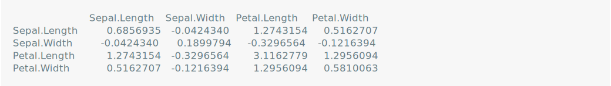
You can pass arguments to the function by setting args to the list of arguments.
This is often necessary as these arguments are explicitly copied to the child process, whereas the evaluated function cannot refer to variables in the parent.
For example, the following does not work:
mycars <- cars callr::r(function() summary(mycars))
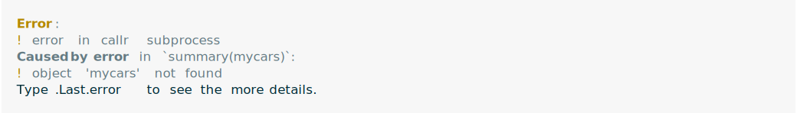
But this does:
mycars <- cars callr::r(function(x) summary(x), args = list(mycars))
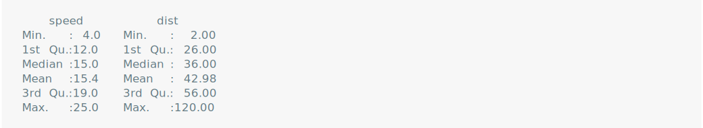
Note that the arguments will be serialized and saved to a file, so if they are large R objects, it might take a long time for the child process to start up.
You can use any R package in the child process, just make sure to refer to it explicitly with the :: operator.
For example, the following code creates an igraph graph in the child, and calculates some metrics of it.
callr::r(function() { g <- igraph::sample_gnp(1000, 4/1000); igraph::diameter(g) })
callr copies errors from the child process back to the main R session:
callr::r(function() 1 + "A")
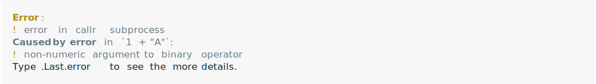
callr sets the .Last.error variable, and after an error you can inspect this for more details about the error, including stack traces both from the main R process and the subprocess.
.Last.error
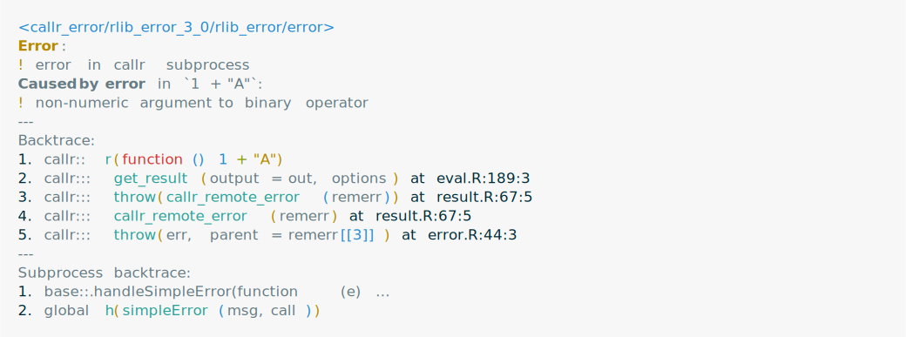
The error objects has two parts. The first belongs to the main process, and the second belongs to the subprocess.
.Last.error also includes a stack trace, that includes both the main R process and the subprocess:
The top part of the trace contains the frames in the main process, and the bottom part contains the frames in the subprocess, starting with the anonymous function.
By default, the standard output and error of the child is lost, but you can request callr to redirect them to files, and then inspect the files in the parent:
x <- callr::r(function() { print("hello world!"); message("hello again!") },
stdout = "/tmp/out", stderr = "/tmp/err"
)
readLines("/tmp/out")
readLines("/tmp/err")
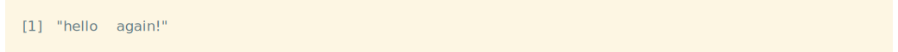
With the stdout option, the standard output is collected and can be examined once the child process finished.
The show = TRUE options will also show the output of the child, as it is printed, on the console of the parent.
r_bg() is similar to r() but it starts the R process in the background.
It returns an r_process R6 object, that provides a rich API:
rp <- callr::r_bg(function() Sys.sleep(.2)) rp
This is a list of all r_process methods:
ls(rp)
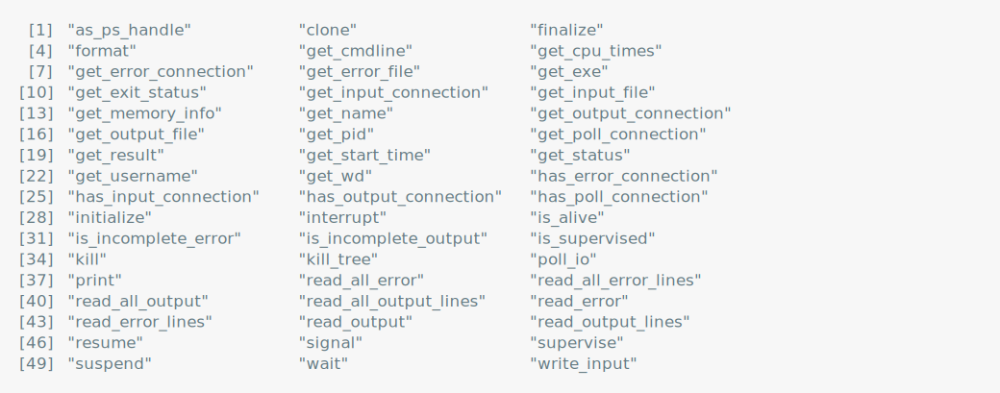
These include all methods of the processx::process superclass and the new get_result() method, to retrieve the R object returned by the function call.
Some of the handiest methods are:
get_exit_status() to query the exit status of a finished process.
get_result() to collect the return value of the R function call.
interrupt() to send an interrupt to the process. This is equivalent to a CTRL+C key press, and the R process might ignore it.
is_alive() to check if the process is alive.
kill() to terminate the process.
poll_io() to wait for any standard output, standard error, or the completion of the process, with a timeout.
read_*() to read the standard output or error.
suspend() and resume() to stop and continue a process.
wait() to wait for the completion of the process, with a timeout.
poll()Multiple background R processes are best managed with the processx::poll() function that waits for events (standard output/error or termination) from multiple processes.
It returns as soon as one process has generated an event, or if its timeout has expired.
The timeout is in milliseconds.
rp1 <- callr::r_bg(function() { Sys.sleep(1/2); "1 done" })
rp2 <- callr::r_bg(function() { Sys.sleep(1/1000); "2 done" })
processx::poll(list(rp1, rp2), 1000)
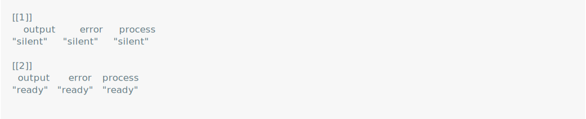
rp2$get_result()
processx::poll(list(rp1), 1000)
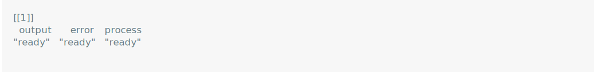
rp1$get_result()
r_session is another processx::process subclass that represents a persistent background R session:
rs <- callr::r_session$new() rs
r_session$run() is a synchronous call, that works similarly to r(), but uses the persistent session.
r_session$call() starts the function call and returns immediately.
The r_session$poll_process() method or processx::poll() can then be used to wait for the completion or other events from one or more R sessions, R processes or other processx::process objects.
Once an R session is done with an asynchronous computation, its poll_process() method returns "ready" and the r_session$read() method can read out the result.
rs <- callr::r_session$new() rs$run(function() runif(10))
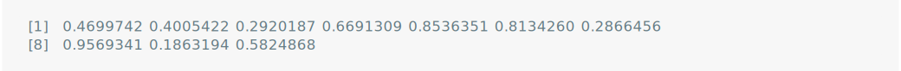
rs$call(function() rnorm(10)) rs
rs$poll_process(2000)
rs$read()
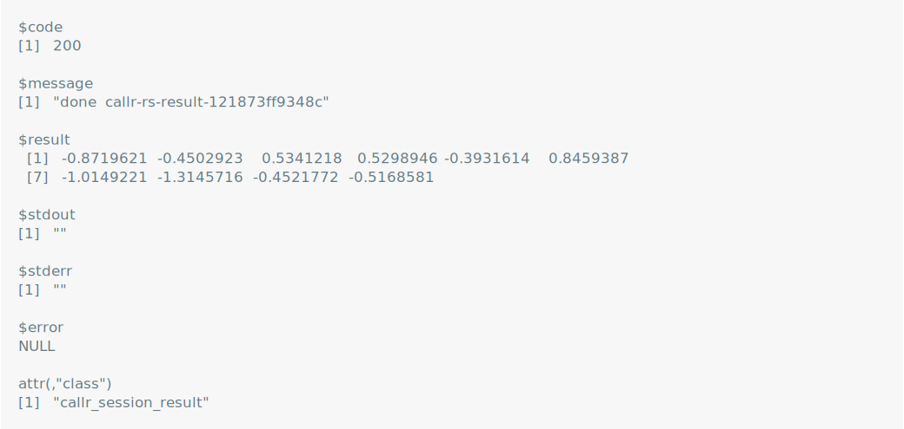
R CMD commandsThe rcmd() function calls an R CMD command.
For example, you can call R CMD INSTALL, R CMD check or R CMD config this way:
callr::rcmd("config", "CC")
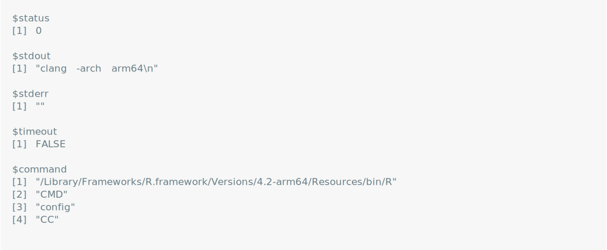
This returns a list with three components: the standard output, the standard error, and the exit (status) code of the R CMD command.
Please note that the callr project is released with a Contributor Code of Conduct. By contributing to this project, you agree to abide by its terms.
MIT © Mango Solutions, RStudio
Maintainer: Gábor Csárdi csardi.gabor@gmail.com (ORCID) [copyright holder]
Authors:
Winston Chang
Other contributors:
RStudio [copyright holder, funder]
Mango Solutions [copyright holder, funder]
Useful links:
Report bugs at https://github.com/r-lib/callr/issues